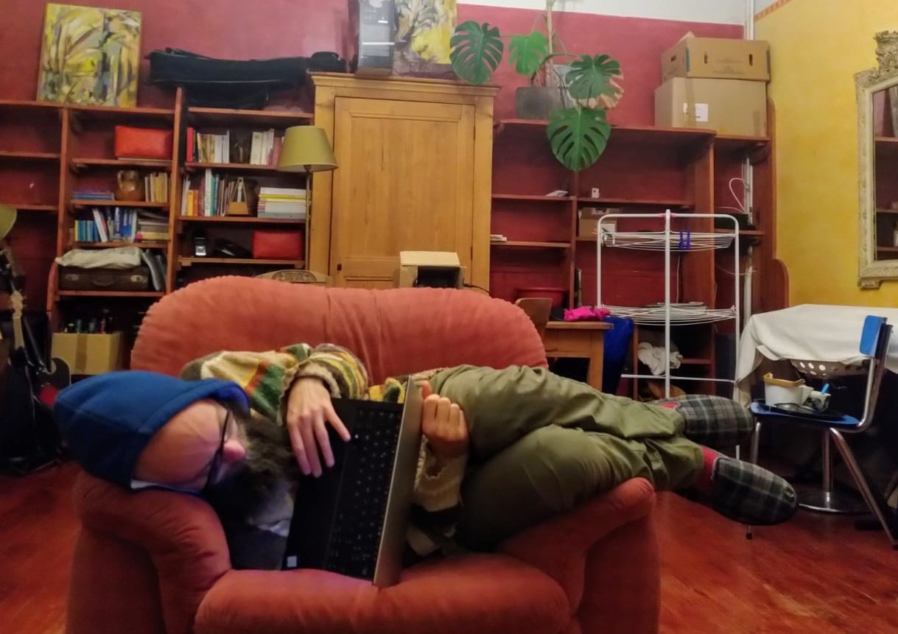
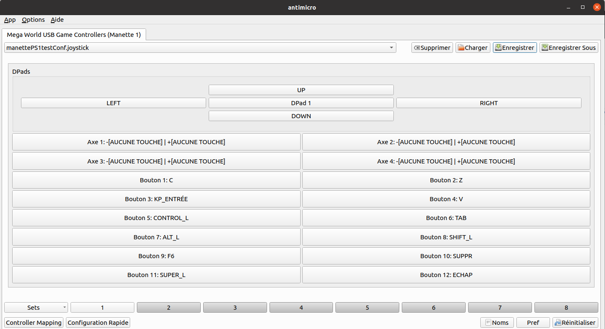
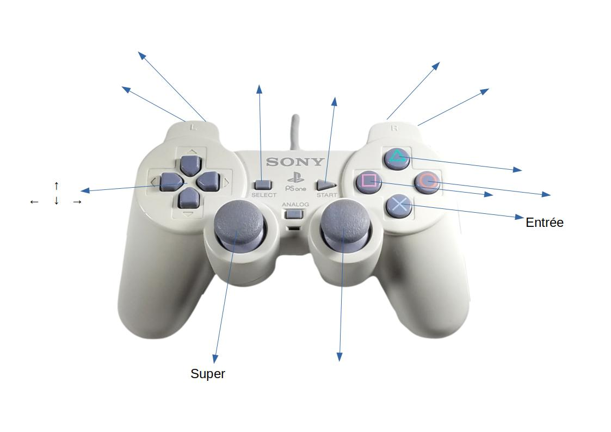
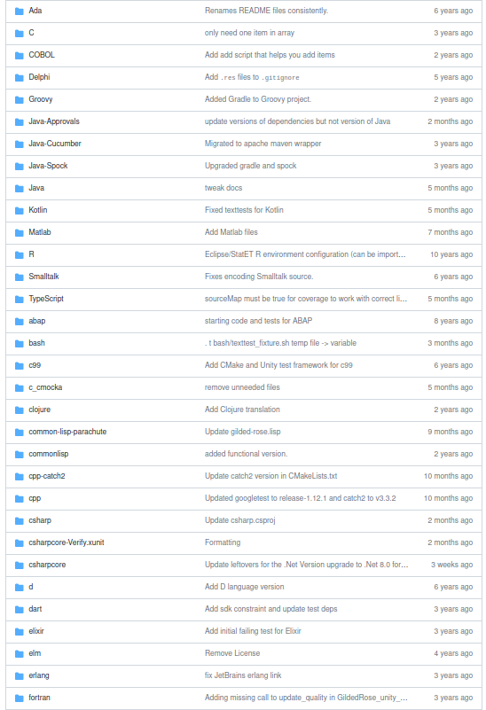
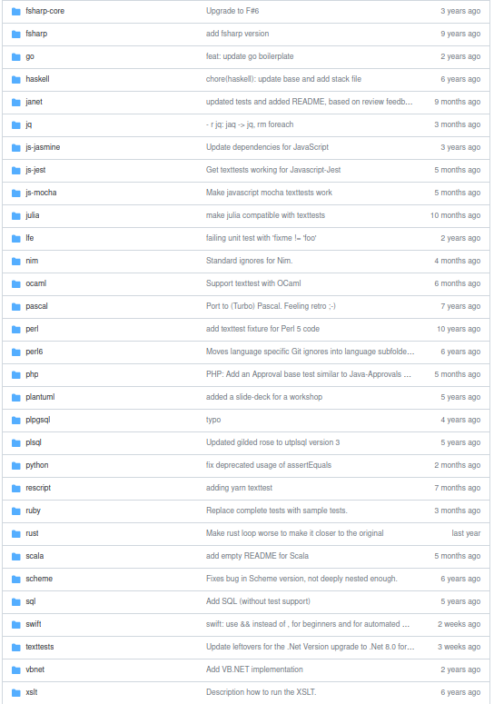
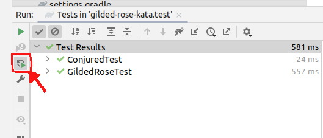
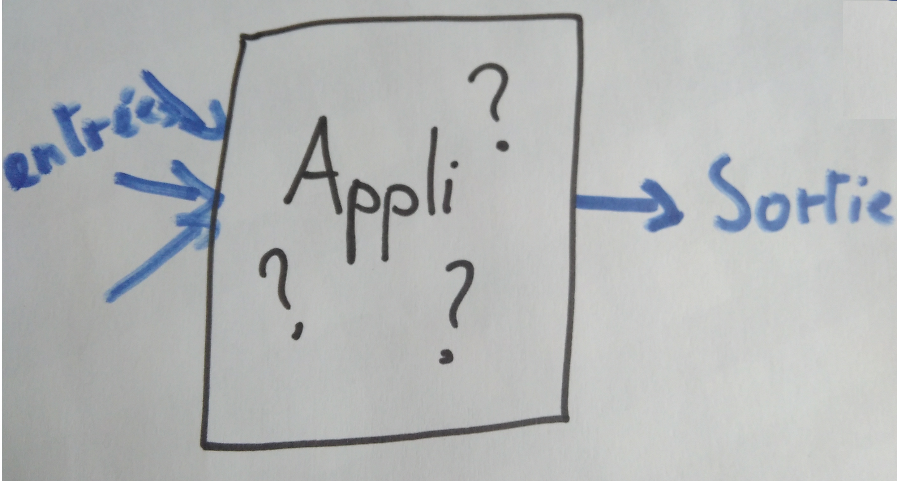
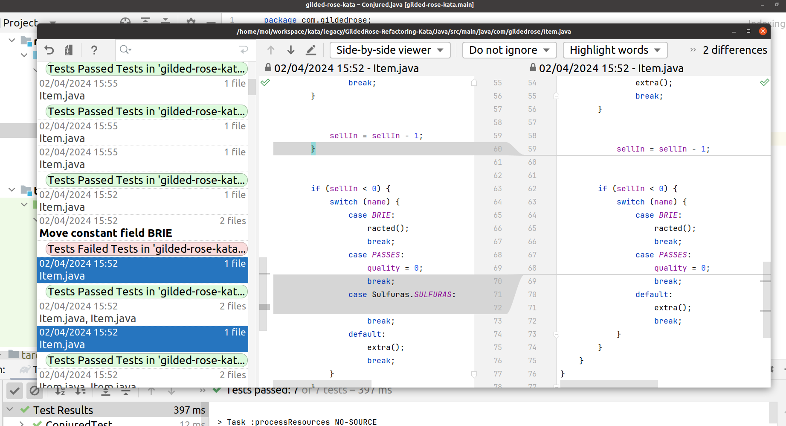
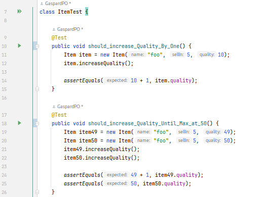
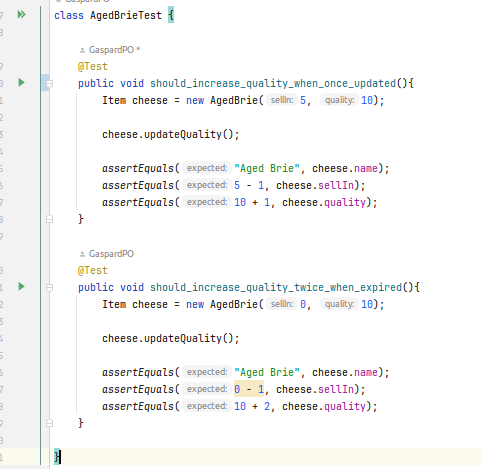

À fond les manettes
Gaspard POINTEAU@Gaspard_PO
Gaspard POINTEAU
Formation
- Craft : TDD, Legacy, Agilité, travail d'équipe ...
- Refacto de code legacy
- Agilité (canal historique : XP, manifesto)
- Scrum
Certification Qualiopi : financé par OPCO
La manette
Antimicro / AntimicroX
 https://github.com/AntiMicroX/antimicroxMapping :
Gilded Rose
 Gestion d'un hôtel des ventes de WoW.
Les objets ont une qualité (prix) qui varie en fonction du temps.
Des règles spécifiques selon le type d'objet et leur date de péremption (sellIn).
switcher : ctrl + tab
hide : shift + echap
Tests
Tests automatiques sur IntelliJ :
Les tests sont relancés automatiquement à chaque modification d'un fichier.
Golden Master Test
Le système est une boite noire, on vérifie que pour les mêmes entrées on a toujours les mêmes sorties
Approvals
Sérialiser les objets, ou rediriger les sorties pour avoir du texte facile à comparer
Générer les combinaisons possibles d'entrées.
Mutation : tester le test

Vérifier que les tests attrapent les bugs
Partie Rouge du TDD
Outils de mutation testing, ou à la main
Historique
ctrl +Z, commit et git, historique local ...
permettre de tester des trucs sans risques et revenir à un état stable
Historique Local

annuler : ctrl + Z
Refacto
Alt-Entrée : quick fix
ctrl + alt + C : extract constant
ctrl + alt + V : extract variable
ctrl + alt + M : extract Méthode
ctrl + alt + N : Inline
F6 : Move, escalate
shift + F6 : rename
Extraire des tout petits morceaux,
Partir du plus imbriqué
Duplication, méthodes
Faire apparaitre la duplication
Rendre la méthode cohérente d'un point de vue métier
Déplacer au bon endroit
Écrire des tests unitaires qui définissent le besoin
Flow of control
Rendre l'ordre cohérent : mettre ensemble les tests de même catégorie
Ne pas avoir peur de dupliquer pour supprimer les mauvaises généralisations
Faire apparaitre le vide pour expliciter
ctrl + alt + L : reformat le code
Polymorphisme
Remplacer des tests sur un type par de l'héritage.
Ctrl + Alt + Shift + U : générer le diagramme
Babystep :
par toutes petites étapes
Commencer par un objet vide et overrider les méthodes une par une.
Faire objet par objet
Penser (encore) aux tests unitaires pour écrire des specs
Ajout de nouvelle fonctionnalité
Du TDD pour décrire le besoin.
Décrire précisemment, avec les types et les variables.
Génération automatique
On résume le refacto :
Tests de non-régression fiables
Tests Automatiques
Babysteps
Du plus imbriqué au plus général
Faire apparaitre la duplication explicitement
Les boutons nécessaires :
Limitations de la manette :
Impossible de faire notre vrai travail :
Faire apparaitre la connaissance métier via le namming et les tests
Shift Shift :
Search Everywhere
Plein de Katas :
99 Bottles of OOP :